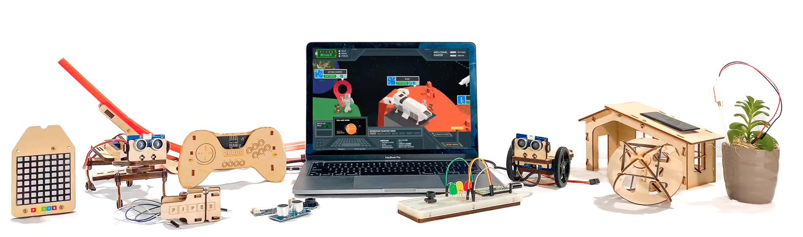
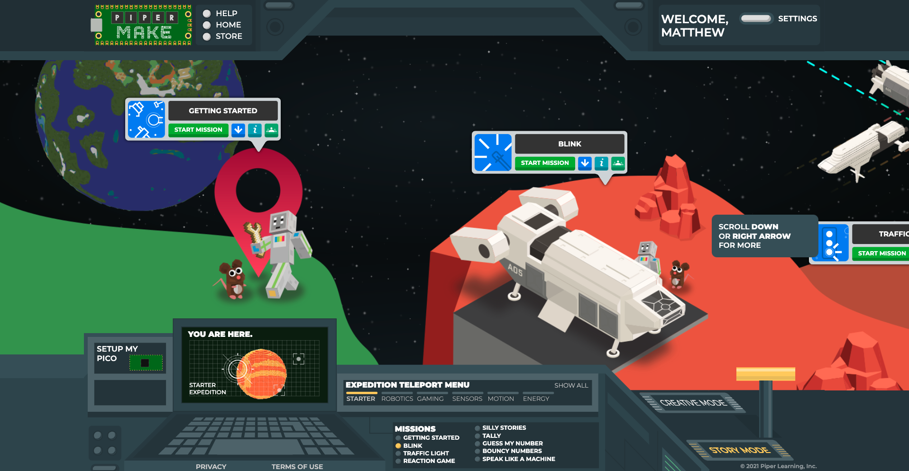
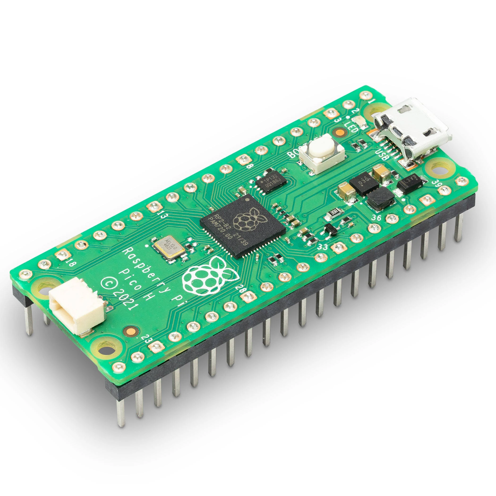
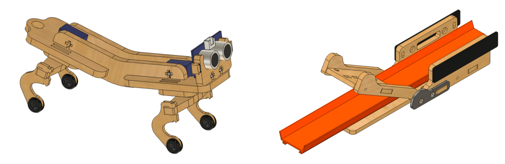
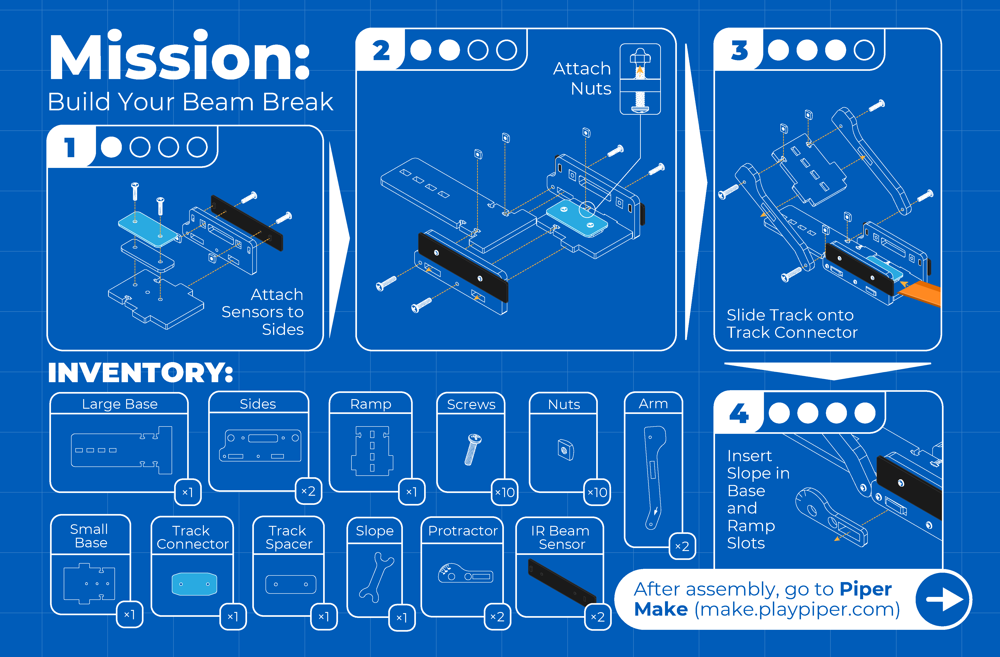
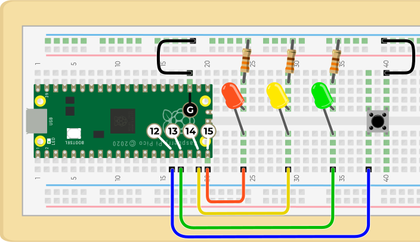
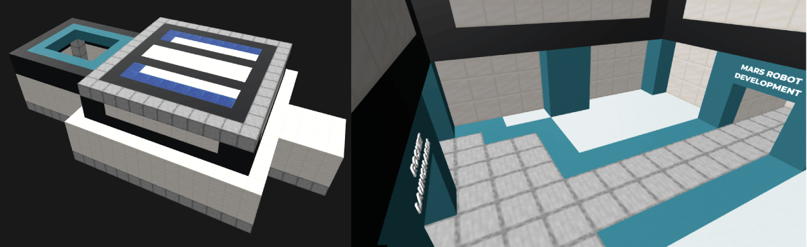
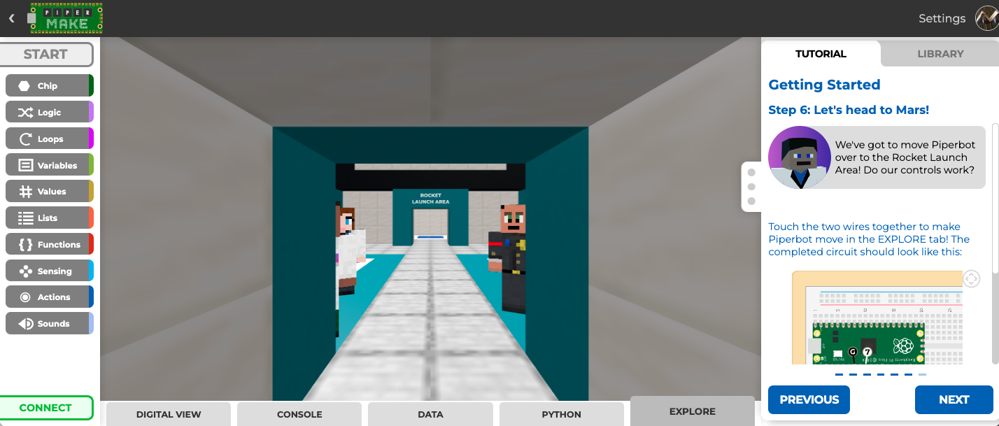
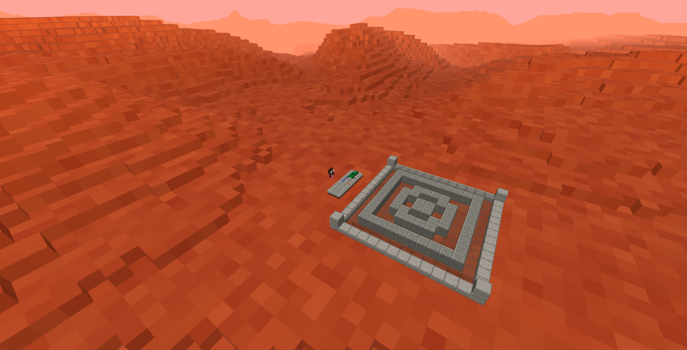

Piper Make
Piper Make is the largest and longest project I've ever been involved with. I'm proud of the work I've done on it and I'm proud of my coworkers and collaborating contractors work too. It's an amazing product that is already making a difference in classrooms around the world.
The History of Piper Make
Piper Learning is famous for the wooden Raspberry Pi computer that you build yourself. On its own, that's an amazing product too. I first met the Piper team at ISTE in Denver Colorado when I was working at Parallax Inc. Our booth was right across the aisle from theirs.
We had a great time and some great conversations, and at the time, I figured that at most, I might bump into them again at another trade show.
Fast forward a few years later - I had since left Parallax and reconnected with Piper Learning. At first, I worked with them to create a few educational resources. I then helped with a few things on their e-commerce site, and eventually began working on something called the "Command Center", which was an Arduino-powered game controller.

The genesis of the Command Center happened before I started working for them. But even then, it was always sold as a "BETA", and whatever came next was going to be based on it.
PiperLab
Along with a few other Piper engineers, we focused on the development of a new platform and product called PiperLab. Despite being almost production-ready, this early iteration of what would later become Piper Make was never released.
We replaced the Arduino with an Adafruit ItsyBitsy M4, and built up an entire platform around Blockly and CircuitPython, and I developed a novel method for programming the microcontroller module directly from the browser. I also developed a means for routing the incoming serial stream to do more than just show things in the terminal - but more on the details later.
Out of Nowhere...The Pi Pico!
Piper's products had long been built on the Raspberry Pi platform, starting with their flagship Piper Computer Kit. While other microcontrollers like Adafruit's ItsyBitsy were awesome, Piper's close partnership with Raspberry Pi was always a powerful part of their brand and something we were happy to continue in this new project.
When Raspberry Pi introduced the RP2040 and the Pico in January 2021, it took the maker community by storm, and when I told Chris Bouman, Piper's COO, that I thought we could re-tool PiperLab to work with the Pico, he was excited about that possibility.
By the end of February, the project had fully pivoted to using the Pico and getting away from the game controller concept in favor of a simpler breadboarded “makers kit”. It was also branded under a new name: Piper Make.
Because we were so close, the goal was to launch it on Pi Day (March 14th) 2021, and we managed to pull that off, too!
Some Good Press
Out of the gate, the product got some good press, which was personally validating!
- Hackster.io: Piper Launches Piper Make Visual Coding Environment for the Raspberry Pi Pico
- Tom's Hardware: Piper Make Is a Raspberry Pi Pico Drag and Drop Python Editor
- Make Magazine: Play the Piper for Pi Day
The Monthly Maker's Club
The Piper Make Starter Kit, which includes:
- Large Breadboard with Laser Cut, Laser Etched Wood Base
- Jumper Wires (10 - M2M)
- Resistors (10)
- Tactile Buttons (3)
- LEDs (5)
- Micro-USB to USB-A cable
- Piper Make Stickers
is the flagship product, and the Monthly Maker's Club was a subscription-based service where we would send a new product with at least 1 (and usually 2 or 3) projects to accompany that product. It was, to be honest, a brutal schedule to keep, and I was happy when we made it through that 12 month commitment. I was designing each kit and writing the accompanying tutorials, all while teaching full time. On Piper's end, it was a small team doing the production, sales, and marketing - and looking back on it we pulled off a miracle every month.
The upside of the Monthly Maker's Club is that it forced us to grow the product line quickly. Some of the monthly kits became permanent products, and others were revised into even better standalone products.
Current Product Line
The Piper Make Product Line has grown to include:
- Starter Kit
- Game Controller
- Sensor Explorer (this is a kit for the Piper Computer that is also compatible with Piper Make)
- Light Show
- Beam Break
- Motion Ball
- Solar House
- Soil Sensor
- Robotic Rover
- Robotic Walker
- Heart Rate Sensor
Since March of 2021, I have designed each one of the kits. I work with the Piper team to come up with ideas, then I design a prototype in CAD that they can cut out using their on-site laser cutters. From there, we do a few design reviews to work out the kinks, branding, and production.
Once a kit is good to go for production, I or one of the Piper team members writes a tutorial or two for it.
As for graphics, Shree designs the "blueprints", which are kid-friendly assembly instructions along with the homepage graphics to incorporate it into the story arc that makes Piper Make so engaging.
I create all of the diagrams and educational graphics within the tutorial using Inkscape. We publish them as SVGs so that they scale cleanly and students can zoom into any of them if necessary.
The Software Magic
The timing of Piper Make's release happened to correspond with the release of a Chrome browser feature that makes it possible: Web-serial. I wish that every modern browser would implement it, but so far Chromium-based browsers are the only ones that do.
Deciding to leverage Web-serial and essentially require that user's use Chrome (or Edge or Opera) was a calculated choice. When your development team is 1 part-time person and the occasional few hours from another contractor here or there, you do what you can. Developing an application/extension/client-agent was just not possible given our available resources.
Web-serial + CircuitPython + Paste-mode = 💕
Web-serial is a really cool technology. It's an extension of Web-USB, and it allows any serial device (think Arduino, Micro:bit, Pi Pico, ESP32, etc.) to communicate directly with the Javascript on a web page. It relies on promises and streams, but it's fairly easy to implement. Google created a really good primer on it here.
The second technology that makes this all work is Adafruit's CircuitPython - more specifically, the REPL (Read-Evaluate-Print-Loop). Essentially, you can terminal into the serial device, type Python code right into the terminal, and when you press enter, it runs the code you just typed!
We knew we wanted this to be kid-friendly, and Google's Blockly is a great, open-source tool to help kids learn programming. And you can get Blockly to generate nearly any kind of code you want - including Python.
The trick, then, was to get the Blockly generated code "typed" into the serial terminal (or more accurately, the serial stream). After banging my head on the table for a few days and obsessing over line breaks, carriage returns, and tabs - I decided to RTFM (read the effin' manual).
That's when I stumbled across Paste Mode. You can find it in MicroPython's documentation here. CiruitPython is a fork of MicroPython, so they share many of the same core behaviors, paste-mode being one of them. And that's what we needed to get this all to work!
What it looks like in JavaScript
This isn't all of it, but there are three important parts to the serial connection in the browser. This first part is what I could best describe as the handshake where the connection is established. The things worth noting are the delays, which help make sure things don't talk over each other, and the use of ASCII 3, 4, and 5 (Control-C, Control-D, and Control-E). These toggle the REPL and Paste Mode when done in the right order and at the appropriate time.
async function loadDevice(loadCode, payload) {
// Make sure the Serial API writer exists
if (serialConnection.writer) {
// send CTRL-C to enter the REPL
serialConnection.writer.write(String.fromCharCode(3));
serialConnection.currentState = 'REPL';
// give the uC time to respond
await delay(50);
// send CTRL-D to leave REPL (should be ignored if we aren't in the REPL)
try {
serialConnection.writer.write(String.fromCharCode(4));
serialConnection.currentState = 'UART';
} catch (error) {
showErrorModal(error);
}
// give the uC time to respond
await delay(50);
// if this function is being called to stop running code, that should have happened, so the function can simply exit
if (!loadCode) {
return;
}
// Attempt to open the REPL (Try for 2 seconds total)
for (let i = 0; i < 8; i++) {
// send CTRL-C to enter the REPL
serialConnection.writer.write(String.fromCharCode(3));
// listen for the REPL prompt
for (let j = 0; j < 5; j++) {
// give the uC time to respond
await delay(50);
// Verify that a REPL was opened
if (serialConnection.buffer.indexOf('\n>>>') > -1) {
serialConnection.buffer = '';
serialConnection.currentState = 'REPL';
break;
}
}
// If the prompt if found, break out of this loop and continue on
if (serialConnection.currentState === 'REPL') {
break;
}
}
// If the REPL prompt was found, continue trying to load code
if (serialConnection.currentState === 'REPL') {
serialConnection.writer.write(String.fromCharCode(5));
await delay(150);
// Attempt to get into paste mode (Retry up to 15 times: 1.5 seconds)
let connectionEstablished = false;
for (let i = 0; i < 15; i++) {
if (serialConnection.buffer.indexOf('===') > -1) {
connectionEstablished = true;
serialConnection.buffer = '';
serialConnection.currentState = 'PASTE';
break;
}
serialConnection.writer.write(String.fromCharCode(5));
await delay(100);
}
// If a valid editor (where the user's python code is) and the device is in the
// correct state, load the user's python code to the device
if (connectionEstablished && editor) {
let code = '';
if (payload) {
code = payload;
} else {
code = getPythonCode(true);
// Some code modules don't play nice when you try to stop them and then run something else
// this trick causes a HARD reset of the microcontroller.
// It does cause a disconnect, but that's preferable to a lock-up.
if (code.indexOf('adafruit_hid') > -1 || code.indexOf('piper_controller') > -1) {
serialConnection.flagHID = true;
}
}
// Write code to the uC, then signal that the paste is complete
serialConnection.writer.write(code + String.fromCharCode(4));
// wait based on length of code to send
await delay(Math.floor(code.length * 10000 / serialConnection.baudRate) + 10);
// Clear the buffer used to monitor the connection and set the state
serialConnection.buffer = '';
serialConnection.currentState = 'RUNNING';
if (!payload) {
// Set the UI to indicate that a program is running
setStartStopButtons(false);
// set a watchdog to see if the Python code has stopped or errored
serialConnection.codeRunningMonitor = setInterval(replFlagWatchdog, 1000);
// Clear the console and graph
if (!serialConnection.showVerbose) {
term.display(null);
}
clearGraphData();
} else {
return;
}
// If for some really strange reason the python editor object doesn't exist,
// let the user know something is wrong - this state has never been reached that I'm aware of
} else if (!editor) {
console.error('WebSerial Error: Code editor unavailable');
showErrorModal('unknown');
disconnect();
// The code above was unable to get the device into "Paste Mode", so code couldn't be loaded.
} else {
// serialConnection.currentState = 'REPL';
console.error('WebSerial Error: Unable to enter Paste Mode');
showErrorModal('try-again');
disconnect();
}
// The device wasn't presenting a prompt for the REPL, of the code above couldn't parse it out of the incoming stream
} else {
console.error('WebSerial Error: Unable to open the REPL');
showErrorModal('multiple-devices');
disconnect();
}
}
}
Sending a stream to the browser is something I worked with on Parallax's BlocklyProp, and I learned on that project that it's too easy for users to crush the browser with a massive stream of characters, which all but locks up the browser.
On the BlocklyProp project, I implemented a watchdog that monitors the stream's character rate, and if it's too high, it shuts down the connection and warns the user. Since it worked so well on that system, I implemented it in Piper Make as well:
async function readLoop() {
// Used to track how frequently characters are received to prevent lock-ups and slow-downs
let receiveTimestamp = performance.now();
let receiveCounter = 0;
while (true) {
const { value, done } = await serialConnection.reader.read();
if (value) {
// buffer characters to watch for errors and count incoming characters
serialConnection.buffer += value.replace(/[^>=\n\rEro:]*/g, '');
receiveCounter += value.length;
if (serialConnection.charRateCheck) {
// calculate the number of characters received each millisecond.
let timeNow = performance.now();
let timeDifference = timeNow - receiveTimestamp;
// check every second to see if too many characters are coming in
if (timeDifference > 1000) {
let receiveFrequency = receiveCounter/timeDifference;
receiveTimestamp = timeNow;
receiveCounter = 0;
// If too many characters are coming in (rate is too high),
// close the connection before something really goes wrong and alert the user.
if (receiveFrequency > 5) {
serialConnection.overflowConnectionCloser('characters');
}
}
}
// only display to the console when running
if (serialConnection.currentState === 'RUNNING' || serialConnection.showVerbose) {
term.display(value);
}
}
if (done) {
serialConnection.reader.releaseLock();
setConnectionButtonsState(false);
serialConnection.currentState = 'NONE';
break;
}
}
}
The next thing I implemented was a sort of "routing markup" within the serial stream sent from the Pi Pico to the browser. This let us add commands where the Pico could trigger behaviors on the browser. This was how we implemented many of the features that already existed on the Piper Computer Kit.
We created commands such as:
- System: allows for reading firmware version, installed CircuitPython libraries to see if updates are necessary
- Shout: displays large text promptly in the center of the screen
- Sound: play sound clips or synthesized notes (using Tone.js)
- Graph: display data in a graph
- Digital View: shows the pin or LED state (digital or analog) in real-time:
When a "marked" packet comes through the serial stream, instead of being sent to the terminal, the information is routed somewhere else depending on the command. This allowed me to add a ton of features and interactivity to the platform.
Story Mode - Where We are Going from Here
Shree is one of Piper's founders and Piper's Co-CEO, and she's maintained a vision for Piper Make and Piper as a whole that our products will engage kiddos through the power of stories. The Piper Computer Kit does a lot of that using Minecraft Raspberry Pi Edition.
Piper Make's Missing Piece
Piper Make is incredibly cool, but it was missing something. Immersing kids in the story.
In December 2022, Shree asked if I could add something to the Getting Started tutorial of Piper Make: an immersive story element.
Building a World
Piper Make has always had a story: Piperbot (the lead character), is a robot that is sent by humans to explore Mars. When Piperbot gets there, he meets Pip, a small mouse-like martian creature who helps Piperbot out on their adventures together on Mars. It's a fun story and a neat way to tie everything together, but Piper Make wasn't immersing kids in that story.
The first lesson on both Piper Make and the original Piper Computer Kit asks the user to touch two wires together, and when they do, something happens. On the Piper Computer Kit, the user sees a world and is able to move their character through it by touching the wires together. In comparison, Piper Make explained electricity and showed a GIF of current running through a wire. Admittedly, not nearly as exciting.
At the beginning of Piper Make's development, Piper commissioned a series of video clips to be used as intros and outros for each of the tutorials in Piper Make. They showed kiddos the Piper Make world, but we wanted to bring kids into the world of those video clips, as Piperbot and Pip explored Mars together. So, just like on the Piper Computer Kit, we set out to create that world.
Capturing Virtual World Magic
From the beginning, Piper has long drawn inspiration from the most engaging game out there for kids - Minecraft. However, Piper Computer Kits and Piper Make are not official Minecraft products, and are not approved by or associated with Mojang or Microsoft. The Raspberry Pi Edition of Minecraft by the Raspberry Pi Foundation is licensed under the Creative Commons Attribution 4.0 International License, which allowed the Piper Computer Kit to use the powerful interface to engage kiddos. But Piper Make, restricted to the browser, didn't have this luxury - so we had to figure out another way to bring the magic of virtual worlds to life.
I was already familiar with Three.js from using it to develop simulations to teach science concepts. I knew we could use it to generate the kind of immersive experience that we needed for Piper Make. I also knew that we had worked with an animator/modeler who just might still have the 3D assets he used to create the original intro and outro videos, so we reached out to him.
He did not have the files :(
Go figure. Video content can take up a TON of memory and disk space, so I do not blame him at all for deleting most of what he had done.
He was able to send us a few assets - not a lot, but enough for me to download Blender and go spelunking.
First off - mad props to all you 3D animators out there. I respected what you did before, now I really respect what you do! Next off, I figured a few things out. I learned that you can export the things you create in Blender in GLTF format, and those files can be imported by Three.js (mostly). Additionally, I (more accurately, my daughter - yes she got paid for this) was able to use Minecraft: Education Edition to build the buildings and environments, too. Those models could then be exported and directly read by Three.js as well.
We've published the new version of Getting Started where touching two wires together helps Piperbot move forward:
Next up is helping Pip light an LED so that Piperbot can land on Mars:
I'm really excited to begin this next chapter in Piper Make's story!